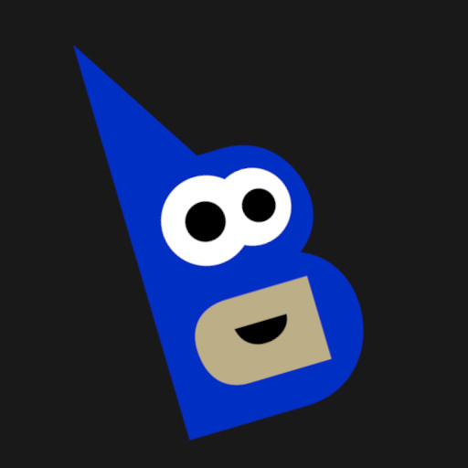
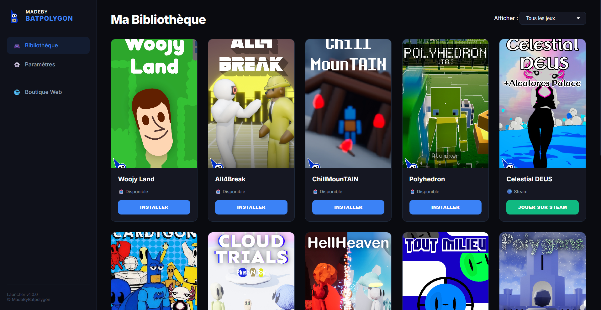

Le MadeByBatpolygon Launcher est un lanceur de jeux pour Windows que j'ai développé sur mesure. Son but est simple : regrouper au même endroit toutes mes créations vidéoludiques. Grâce à cette application, vous pouvez découvrir, télécharger et lancer mes jeux en toute simplicité, sans avoir à chercher les exécutables un par un. C'est l'écosystème central pour tout joueur souhaitant suivre et tester mes projets.
Aperçu de l'interface :

Fonctionnalités principales :
- Bibliothèque centralisée : Accès direct à tous les jeux de l'univers MadeByBatpolygon.
- Mises à jour automatiques : Le launcher détecte les nouvelles versions du launcher et propose de la télécharger.
- Interface fluide : Un design sobre et efficace pensé pour la meilleure expérience utilisateur possible sur Windows.
Changelog :
Version 1.0.0 [17/03/2026]
Lancement Initial
- Déploiement de la toute première version stable du MadeByBatpolygon Launcher.
- Implémentation du système de connexion aux serveurs pour récupérer la liste des jeux disponibles.
- Ajout des fonctionnalités d'installation, de désinstallation et de lancement des jeux.
- Création de l'interface utilisateur visible sur la capture d'écran.
- Intégration d'une barre de progression pour les téléchargements.